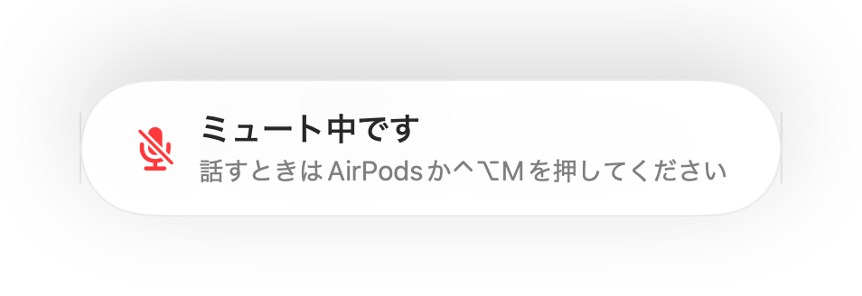
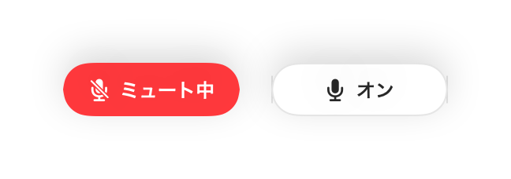
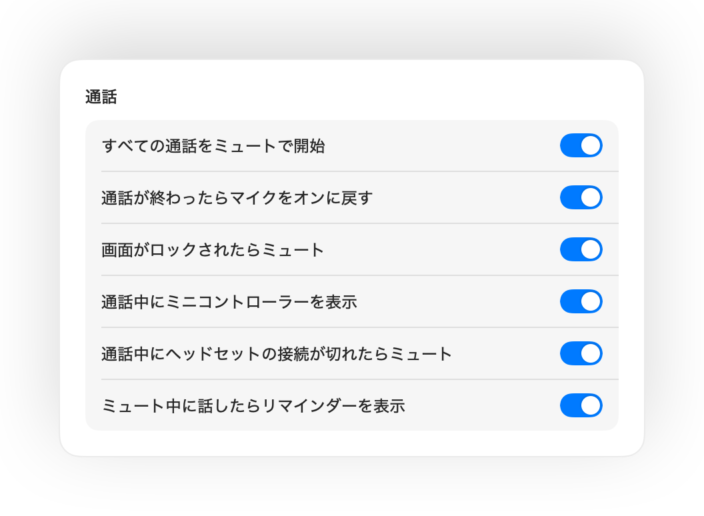
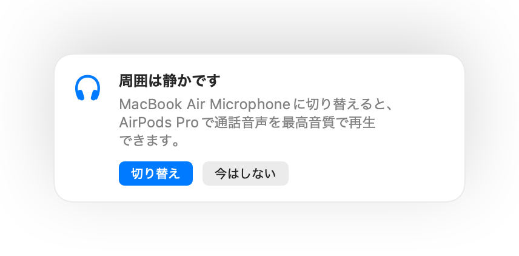

Macのマイクをどこからでもミュート。
AirPodsを押すか、ショートカットキーを1回押すだけ。Muffleはマイク自体をオフにするため、Google Meet、Zoom、Teams、Slackなど、あらゆる会議Appで確実に消音できます。
3日間無料。その後は買い切り、サブスクリプションはありません。 macOS 14 Sonoma以降に対応。

マイクを使用するすべてのAppに対応
- Google Meet
- Zoom
- Microsoft Teams
- Slack
- Discord
- FaceTime
- Webex
- Skype
- SoWork
- Gather
- Chrome
- Safari
- Arc
- Edge
- Firefox
Muffleはハードウェアレベルでマイクをミュートするため、どのApp、ブラウザ、タブを使っていても関係なく機能します。
Macでの通話に必要なすべての機能を
通話中はAirPodsを押してミュート
通話中にステムを1回押すとミュート、もう1回押すとミュート解除になります。Google MeetなどのWeb通話でAirPodsの操作が効かないChromeでも問題なく動作します。
どのAppでも使える1つのショートカット
Control-Option-Mを押せば、通話画面がバックグラウンドにあってもミュートできます。ミュート中に長押しすればその間だけ話せて、キーを離すと再びミュートに戻ります。
「ミュート中です」のリマインダー
ミュートにしたまま話し始めても、相手に声が届いていないことにすぐ気づけるよう、Muffleが画面上でお知らせします。
通話を自動化
すべての通話をミュート状態で開始したり、通話終了時に自動でマイクをオンに戻したり、Macの画面ロック時に自動でミュートしたりできます。
マイクの状態をいつでも把握
通話中は画面上に小さなコントローラーが浮かび、マイクの状態を表示します。クリックするだけでミュートの切り替えが可能です。
マイクレベルをしっかり固定
Chrome、Zoom、Teamsが勝手にマイクの入力音量を変更してしまうことがあります。レベルをロックしておけば、Muffleが自動で元の音量に戻します。
AirPodsの充電が切れても安心
通話中にヘッドホンの接続が切れた場合、Macの内蔵マイクに切り替わって周囲の音が漏れてしまう前に、Muffleが自動でミュートします。
ショートカットとコントロールセンターに対応
「ショートカット」App、Siri、Stream Deck、Raycast、またはコントロールセンターのボタンからマイクをミュートできます。
プッシュ・トゥ・トークまたはプッシュ・トゥ・ミュート
ショートカットの動作を選択できます。タップして切り替え、長押しで通話、咳払いのために長押しでミュートなどに対応。ミュートと解除の個別キーを設定したり、右Optionキーやマウスの追加ボタンを長押ししたりもできます。
静かになったら再びミュート
一言話すためにミュートを解除しても、指定した時間話さないでいると、Muffleが再びミュートします。あなたの声のみが対象で、タイピング音や周囲のノイズは対象外です。
周囲の環境に最適なマイクを提案
静かな部屋でAirPodsを使う場合、Macの内蔵マイクを提案してAirPods側で通話音声を最高音質で再生できるようにします。周囲が騒がしくなると、AirPodsのマイクを提案します。
ミュート状態が一目でわかる
画面のエッジが緑や赤に光る表示、カラーのメニューバーアイコン、フローティングボタン、マイクごとにオフにできる確認音。お好みのものを自由にオンにできます。




1分でセットアップ完了
- Mac App StoreからMuffleをインストールし、マイクへのアクセスを許可します。
- いつも通り、お好みのAppで通話やオンライン会議に参加します。
- AirPodsを押すか、Control-Option-Mを押すか、メニューバーのアイコンをクリックしてミュートします。
プライバシーを最優先にした設計
Muffleは音声を録音、保存、送信することは一切ありません。マイクのオン・オフの切り替えと音量の測定のみを行います。アカウント作成も、アクセス解析も、追跡も不要です。
よくある質問
ChromeのGoogle Meetでも使えますか？
はい、使えます。ChromeはAirPodsのミュート操作をWeb通話に伝えませんが、Muffleがその操作を受け取ってマイク自体をミュートします。ブラウザのタブで行うあらゆる通話でも同様に機能します。
通話相手には自分がミュート中だと見えますか？
通話App上のマイク表示はオンのままになる場合があります。これはMuffleがApp内のボタンではなく、Macのマイク自体をオフにするためです。どちらの場合も相手には声は聞こえません。ミュート中はメニューバーのMuffleアイコンが赤色に変わります。
どのAirPodsに対応していますか？
AirPods Pro、AirPods（第3世代以降）、AirPods Max、および通話コントロールに対応したBeatsの各モデルで使えます。キーボードショートカットとメニューバーからの操作は、どんなマイクでも利用できます。
Zoom、Teams、Slack、Discordでも動作しますか？
はい。デスクトップAppでもブラウザ上の通話でも、Macでマイクを使用するすべてのAppでMuffleは動作します。
サブスクリプション料金はかかりますか？
いいえ、かかりません。すべての機能を3日間無料でお試しいただけます。その後は1回の買い切り購入でロック解除できます。
なぜMuffleにマイクへのアクセス権限が必要なのですか？
macOSはマイクを使用中のAppにしかAirPodsのボタン操作を渡さないため、Muffleは通話中に無音の接続を開いたままにします。音声を録音することは一切ありません。
ミュートにしたままMuffleを終了するとどうなりますか？
Muffleが終了する際に自動でマイクをオンに戻すため、声が出せないまま取り残されることはありません。
対応しているmacOSのバージョンは？
macOS 14 Sonoma以降に対応しています。コントロールセンターのボタンを使用するにはmacOS 26以降が必要です。
Muffleはプッシュ・トゥ・トークに対応していますか？
はい。設定で「プッシュ・トゥ・トーク」を選択し、ショートカットを押している間だけ話すことができます。右Optionキーやfnキー、マウスの追加ボタンなどの単一キーを長押しすることも可能です。
オンライン会議や通話中にAirPodsの音質が悪くなるのはなぜですか？
通話でAirPodsのマイクを使用すると、AirPodsが通話モードに切り替わり、再生音質が低下します。静かな部屋では、Muffleが代わりにMacのマイクを使うよう提案するため、AirPodsで高音質のまま通話を聞くことができます。
周囲のノイズでマイクがオンのままになりますか？
いいえ。MuffleはAppleのオンデバイス音声分析を使って発話を認識するため、話している声のみが対象となります。タイピング音やクリック音、周囲のノイズでオンのままになることはありません。また、録音は一切行われません。
ガイド
- MacでAirPodsを使ってGoogle Meetをミュートする方法MacのChromeではAirPodsを押してもGoogle Meetをミュートできません。AirPodsやショートカットキーでMeetを消音する方法を解説します。
- MacでAirPodsやショートカットを使ってZoomをミュートする方法Zoomが最前面になくても、AirPodsや共通ショートカットキーでMacのマイクをミュート。Zoomアプリとブラウザ版の両方に対応。
- MacでAirPodsを使ってMicrosoft Teamsをミュートする方法AirPods、全体ショートカットキー、メニューバーからMacのMicrosoft Teamsをミュート。Teamsアプリとブラウザ版の両方に対応。
- MacでどのAppからでもSlackハドルをミュートする方法ウインドウを探す必要はありません。グローバルショートカットキーやAirPodsを使って、MacのどのAppからでもSlackハドルをミュートできます。
- MacのDiscord向けプッシュトゥトークと共通ミュートショートカットMacのDiscordで共通のプッシュトゥトークやミュートショートカットキーを使用。AirPodsでも消音できます。Discordアプリとブラウザ版の両方に対応。
- Macで他のAppの操作中にもWebexをミュートする方法Webexが最前面にないときでも、Mac共通のショートカットキーやAirPodsでWebexのオンライン会議をミュート。リモートワーク中の画面共有時にも便利です。
ミュートボタンを探すのは、もう終わりにしましょう。
Muffleは3日間無料でお試しいただけます。
Mac App Storeで近日公開